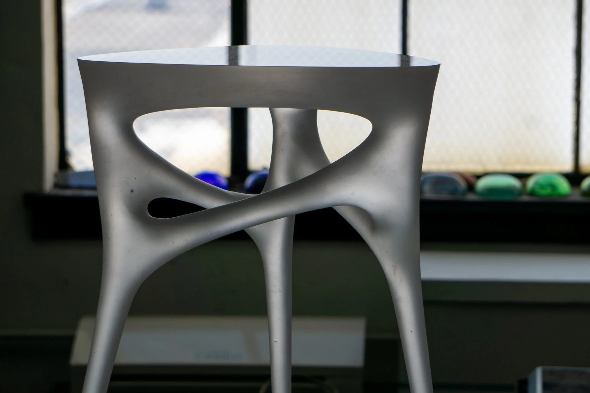
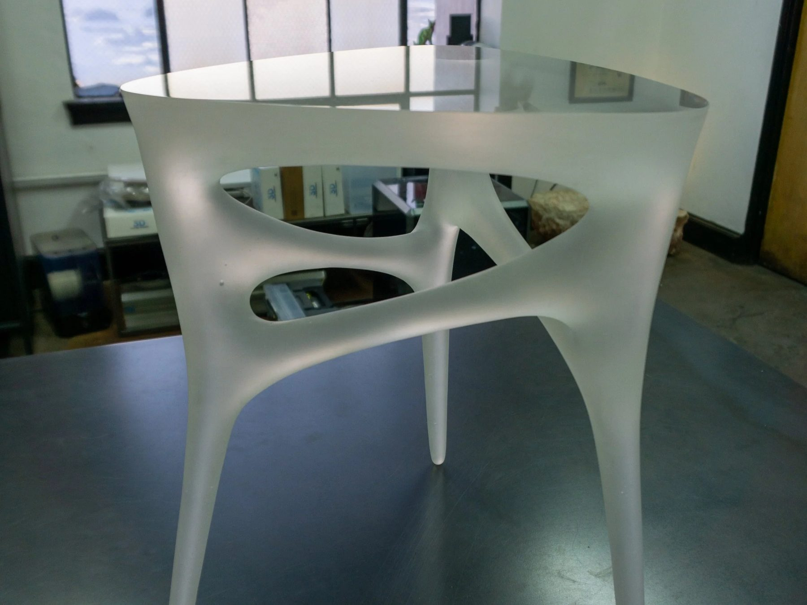
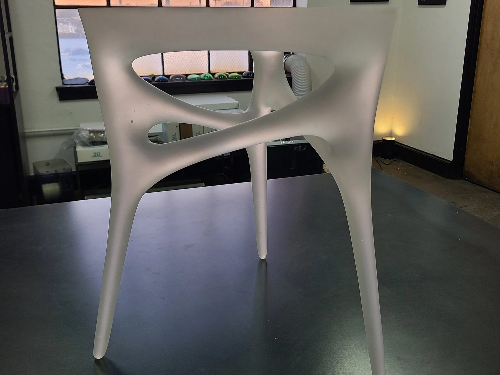
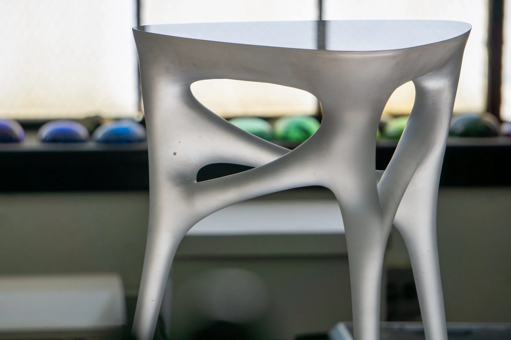
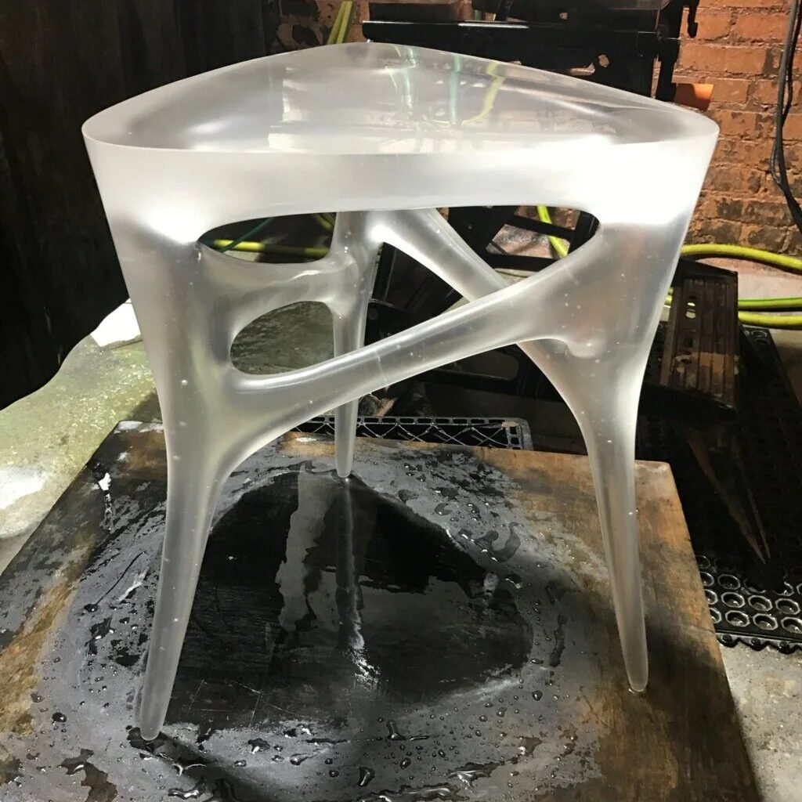
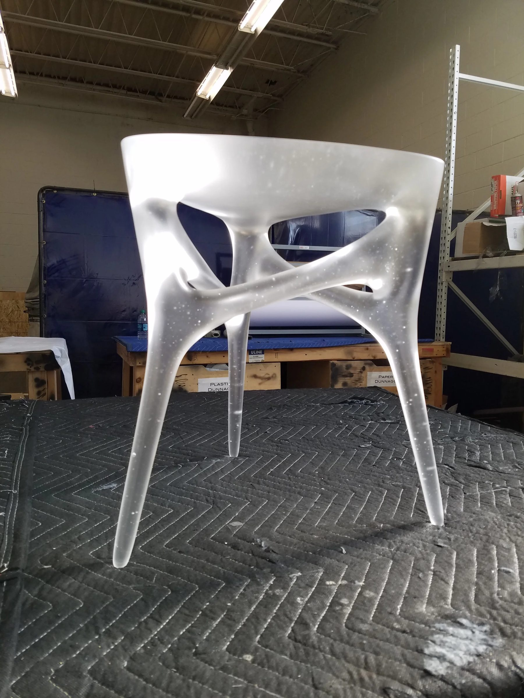

Furniture / 2016 / Private client
Methodology Table
Solid cast glass end table, ongoing since 2016

A solid cast glass end table, produced in an ongoing series for a private client.
The work
A solid cast glass end table for a private client. We had never seen a solid cast glass table like it, and the reason to make it, for us and for the client, was to do something that seems impossible. That is how people take it when they see it in person.
The material question
Glass that thick has to come down in temperature slowly or it cracks. The table runs from thick to thin, two inches at its heaviest, and every section has to cool at the pace of the thickest.
The making
We anneal as if it were twice as thick as it is. Each table spends about ten days in the kiln, nearly a week of that annealing alone. Once the first prototype was dialed in, it rarely fails in the kiln; the risk is in finishing, when it goes back up in temperature for its fine polish.
In place
Ten years on, roughly ten tables. The form stays consistent; the flow of the glass and its bubble pattern are each table's own.
Details
- Year
2016 - Location
Private client - Category
Furniture - Materials
Solid cast glass
Credits
- Glass: Ally Reza
Studio
- ChiLab Studio
- Chicago, Illinois
- Established 2013





Bring us a drawing,
a model, or a hunch.
The studio
Specialty material projects for architecture, interior design, public art, and the fine arts.
ChiLab Studio, Chicago, Illinois. Established 2013.
What we do
- Metal casting
- Glass
- Finishes
- Digital fabrication
- Metal fabrication
- Restoration
- Project management
Contact
info@chilabstudio.com
chilabstudio.com
Instagram @chilabstudio